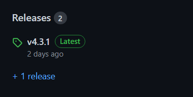
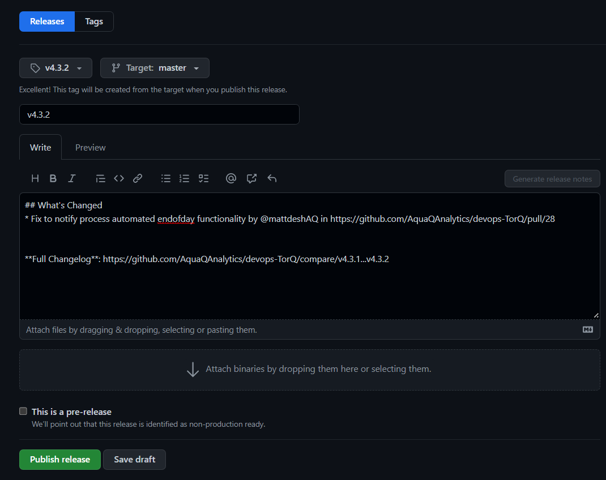

Once all the code to be in the new release has been merged, you can start with
setting up a new tag.
This is done by going to the GitHub repository.

When on the code tab, select Releases on the right-hand
side of the page. This will show all the releases that have been done so far. From
here click on Draft a new release. This will take you to
a page where you can create a new release.

Choose a tag, create a new tag by incrementing on the
previous version, using semantic versioning.Release title the same as the new version tag.Generate release notes.Publish Release.
current structure
├── data
│ ├── logs
│ └── tplogs
│ └── stp1_2021.09.20
├── deploy -> /home/devops1/releases/deploy/v3.6.0_v1.8.0/
├── releases
├── deploy
│ ├── v3.5.0_v1.7.0
│ └── v3.6.0_v1.8.0
├── TorQ
│ ├── v3.5.0
│ └── v3.6.0
└── TorQ-FSP
├── v1.7.0
└── v1.8.0
To the devops folder, add a directory called releases. In this new directory
add folders for both TorQ and TorQ-FSP.
You will need to create version folders too, for the existing folders on the top level and
then copy these files over.
Create a new directory named the tag version, then use:
git clone --branch <tag name> <repo url>
Once the new tag is there for both repos, then create a new directory in
releases/deploy named after a combination of the two repo versions. Then
copy over the two repos, remembering to start with base TorQ first and then FSP
over the top.
cp -r path-to-repo path-to-deployln -s folder-to-link sym-link-folderTo change where the sym link points too
ln -sfn path-to-new-folder sym-link-folder